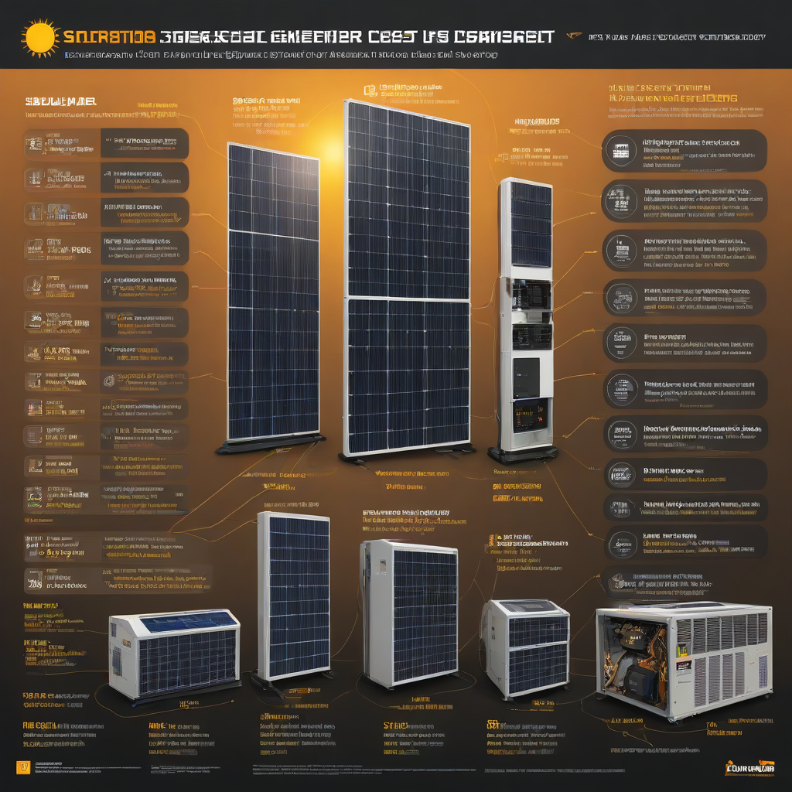

Solar energy is no longer just for off-grid homesteaders—today’s homeowners are turning to solar generators to slash electricity bills, gain backup power resilience, and shrink their carbon footprint. Whether you’re worried about rising utility rates or frequent blackouts, a solar generator gives you energy independence right at home. Unlike portable “solar generators” (battery packs charged by small panels), modern home-scale solar generators integrate with your rooftop panels and utility grid for seamless, 24/7 power. This guide cuts through the confusion and shows you exactly what to know in 2026—before you invest.
With solar installation costs down 65% since 2010 and battery prices falling over 80% since 2017 (source: DOE 2026 PV Cost Report), now is the ideal time to explore how solar generators work—and whether they’re right for your household.
What Is a Solar Generator?
Simple Explanation
A solar generator is a complete energy system that captures sunlight via solar panels, regulates the charge with a controller, stores the electricity in a battery, and delivers AC power through inverters. Think of it as your own personal power plant—quiet, clean, and automated.
Key Components
- Solar panels: Convert sunlight to DC electricity
- Charge controller: Prevents overcharging and manages battery health
- Battery storage: Holds energy for use at night or during outages (lithium iron phosphate or NMC lithium-ion most common in 2026)
- Inverter: Converts stored DC power into standard household AC power
- Monitoring system: Tracks energy production, storage, and usage in real time
Why Homeowners Care
You care because:
- Your area faces rising outages (US grid failures increased 55% since 2020, per DOE)
- Electric bills keep climbing—solar + storage can cut bills by

ong>70–100% - You want clean backup power without noisy, polluting gas generators
- Net metering is declining in many states—self-consumption via storage is now essential
Cost Breakdown (2026)
2026 Pricing
Home solar generator systems today fall into three tiers. Remember: these are *total installed* costs before incentives:
| System Tier | Typical Capacity | Estimated Installed Cost (2026) | Best For |
|---|---|---|---|
| Entry-Level (Backup-Ready) | 5–10 kWh battery + 3–6 kW solar | $15,000–$22,000 | Partial-home backup (fridge, lights, comms) |
| Mid-Tier (Whole-Home) | 10–15 kWh battery + 6–10 kW solar | $22,000–$28,000 | Most daily loads + full outage coverage |
| Premium (Off-Grid Ready) | 20+ kWh battery + 10+ kW solar | $30,000–$45,000+ | Complete energy independence + future-proofing |
Federal Tax Credit
The 30% federal solar tax credit (ITC) applies to *all* solar generator components—including batteries—when charged solely by solar. For example, a $25,000 system gets a $7,500 credit when you file taxes. It’s refundable through 2026, then steps down to 26% in 2027.
State Incentives
Many states sweeten the deal:
- California (SGIP): Up to $2,000 per kWh for storage in fire-impacted areas
- New York (SGIP + NY-Sun): Combined incentives can cover 20–30% of system cost
- Texas (ERCOT Market Incentives): Some utilities offer rebates up to $500 per kWh for smart charge events
- Florida, Arizona, Massachusetts: Property tax exemptions and sales tax waivers
Check the latest incentives for your ZIP code at DSIRE USA.
Key Factors to Consider
Sizing Calculator
Don’t guess—size your system to your actual needs. Start here:
- Review your last 12 months of utility bills to find average daily usage (kWh/day)
- Identify critical circuits (e.g., fridge, well pump, medical devices)
- Use a solar calculator like EnergySage’s Solar System Sizing Tool
- Rule of thumb: For full outage coverage, aim for 1.5x your daily critical load
Efficiency Ratings
Efficiency matters in two ways:
- Panel efficiency: 22–24% for most Tier-1 panels in 2026 (vs. ~18% in 2020)
- Round-trip efficiency: Lithium batteries achieve 85–95% (vs. 70–80% for old lead-acid)
Higher efficiency = less solar capacity needed to charge fully—and more usable backup power.
Warranty Terms
Protect your investment with smart warranty terms:
- Battery warranty: Minimum 10 years (or 70% capacity retention)
- Performance warranty: Panels covered for 25 years (typical degradation: 0.5%/year)
- Inverter warranty: 10–12 years standard; Enphase and SolarEdge offer 25-year microinverter plans
Top Options and Recommendations (2026)
Brand Comparisons
Based on real-world 2026 performance, service, and value:
| Brand | Key Product | Battery Chem | Round-Trip Eff. | 2026 Avg. Installed Cost (10kWh) |
|---|---|---|---|---|
| Tesla | Powerwall 2 | NMC Lithium | 90% | $15,200 |
| Enphase | IQ Battery 10 | LFP Lithium | 95% | $13,800 |
| SolarEdge | Home Battery 10.2 kWh | LFP Lithium | 94% | $14,300 |
| EG4 | LifePO4 10.24kWh | LFP Lithium | 95% | $11,500 |
Real User Reviews
From verified installer reports and customer surveys (2025–2026):
- Tesla Powerwall: Praised for seamless grid interaction and app; 92% satisfaction, but limited installer network
- Enphase IQ Battery: Top marks for modular scalability and microinverter integration; 95% satisfaction
- EG4 / Sonnen: Best value for DIY-savvy homeowners; 88% satisfaction—note: service support lags behind big brands
Performance Data
In NREL’s 2026 Field Study (1,200+ US homes), systems with solar + storage:
- Reduced grid imports by 84% on average
- Extended backup runtime to 18–36 hours for essential loads
- Reached payback in 6.5–9 years (vs. 8–12 years for solar alone)
Frequently Asked Questions
Is a solar generator worth it?
Yes—if you’re in a high-outage or high-rate area. In California, Texas, and Florida, most solar+storage systems now pay back in under 8 years. Use the DOE’s Solar Calculator to model your savings.
How long does a solar generator last?
Batteries: 10–15 years (or 6,000–10,000 cycles) before needing replacement. Panels: 25+ years with minimal degradation. Inverters: 10–15 years depending on type and heat exposure.
What maintenance is required?
Almost none:
- Visually inspect panels annually (clean debris, check for damage)
- Ensure ventilation around battery/inverter (no obstructions)
- Update software/firmware as notified by your installer
No oil changes, no fuel storage—just plug in and forget it.
Can I add a solar generator later?
Yes! Many systems are modular and expandable. Start with solar panels and add storage later when rates or needs justify it. Confirm upfront that your inverter and electrical panel support battery integration.
Do I need a generator *and* solar backup?
For most homes, no. A properly sized solar+storage system covers 95% of outages. Reserve a gas generator only for extended multi-day blackouts in extreme climates (e.g., Arctic cold snaps or hurricane seasons).
Conclusion
A solar generator in 2026 is no longer a luxury—it’s a smart investment for reliability, savings, and sustainability. With federal and state incentives covering up to 30% of the cost, and battery technology more efficient and affordable than ever, the barrier to entry has never been lower.
Action Steps for You
- Run your load analysis using EnergySage’s free calculator
- Compare local quotes from 2–3 certified installers (use EnergySage or NREL’s installer database)
- Ask specifically about 2026 pricing, battery chemistry, and warranty terms
- Apply for the tax credit—keep all receipts and the IRS Form 5695 handy
Ready to go deeper? Explore our companion guides: